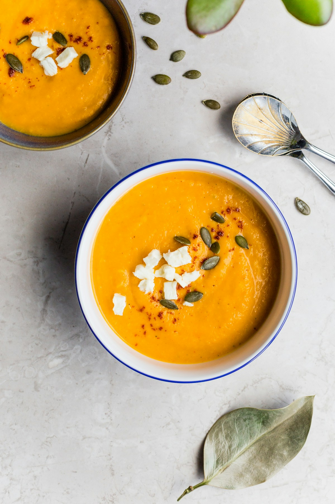

1. The Morning Digestive Landscape
Upon waking, the human gastrointestinal tract is in a sensitive, fasting state. Shocking the digestive system with highly acidic black coffees or ice-cold sugary juices causes sudden gastric distress, spikes cortisol levels, and irritates the stomach lining. In contrast, ancient European and Asian wellness traditions have long revered warm, mineral-rich broths as the optimal dawn nourishment.
At Basil Broth Camp, our morning sipping ritual is a cornerstone of daily vitality. A warm ceramic mug of clear botanical broth hydrates cells with natural electrolytes, soothes mucosal tissues, and stimulates gentle peristalsis without hormonal spikes.
2. Key Nutritional Components of Botanical Sipping Broths
| Nutrient Class | Botanical Source | Physiological Benefit |
|---|---|---|
| Natural Electrolytes (K, Na, Mg) | Carrots, celery, kelp, sea salt | Restores intracellular fluid balance without synthetic additives |
| Glutamic Acid & Glycine | Slow-extracted alliums & mushrooms | Fuel for enterocytes (gut lining cells); promotes tight junction integrity |
| Curcumin & Gingerols | Fresh turmeric & ginger root | Powerful natural soothing activity throughout the digestive tract |
| Volatile Eugenol & Citral | Lemon basil & Genovese basil | Mild carminative action; relieves bloating and sharpens mental focus |
3. Crafting the 5-Minute Morning Sipper
For busy mornings, follow our camp quick-prep formula:
- Heat 250 ml of pre-simmered allium-kombu base broth to 80°C in a small copper saucepan.
- Gently bruise 4 fresh sweet basil or lemon basil leaves between your fingers to rupture essential oil glands, placing them in your favorite ceramic mug.
- Pour the hot broth over the fresh herbs and allow to steep for 3 minutes.
- Add a tiny pinch of unrefined grey Celtic sea salt and a single drop of cold-pressed flaxseed or olive oil. Sip slowly in a quiet morning setting.
4. Mental Clarity and Sustained Energy
Unlike caffeinated stimulants that trigger rapid adrenaline surges followed by afternoon fatigue, the steady amino acids and warm temperature of broth stimulate gentle vagus nerve activation. Campers report reduced morning tension, improved digestive comfort, and sustained mental focus throughout long creative mornings.
5. Circadian Alignment and Seasonal Adjustments
Adjust your morning sipper to reflect the season: in freezing winter months, incorporate cracked black pepper, roasted ginger, and cinnamon basil for thermogenic inner warmth; in hot summer months, opt for a light, refreshing infusion of lemon basil, cucumber peel, and sea fennel served warm or at cellar temperature.
6. Frequently Asked Questions on Sipping Broths
7. Conclusion: A Daily Return to Wholeness
Adopting the morning sipping broth ritual is an act of self-care and mindfulness. By greeting the dawn with warmth, living herbs, and nourishing earth minerals, you set an intentional tone of vitality and peace for the day ahead.
8. The Neurobiology of Morning Warmth: Vagus Nerve Activation
When warm liquid at approximately 55°C to 65°C enters the esophagus and stomach, thermoreceptors stimulate the vagus nerve—the primary neural highway connecting the brain stem to the gastrointestinal tract. Vagus nerve stimulation shifts the autonomic nervous system out of sympathetic "fight-or-flight" stress into parasympathetic "rest-and-digest" equilibrium.
This gentle neurological shift lowers resting heart rate, reduces morning cortisol surges, and promotes calm, focused mental clarity—making the morning broth ritual a profoundly therapeutic practice for busy modern professionals.
9. Sourcing Clean Himalayan & Celtic Mineral Salts
Industrial refined table salt is 99.9% pure sodium chloride stripped of all natural trace minerals and coated with chemical anti-caking agents. In contrast, unrefined grey Celtic sea salt and ancient Himalayan pink salt supply over 80 trace elements, including bioavailable magnesium, potassium, and calcium that work synergistically with the water-soluble vitamins in your botanical broth.
10. Integrating Seasonal Adaptogens into Dawn Sippers
For individuals seeking enhanced cognitive resilience and immune support, explore our seasonal adaptogenic broth additions:
- Ashwagandha Root (Withania somnifera): Grounded earthy notes that pair beautifully with roasted alliums and cinnamon basil to support stress adaptation.
- Reishi Mushroom (Ganoderma lucidum): A woodsy, mildly bitter medicinal mushroom that reinforces natural immune defenses during cold winter months.
- Astragalus Root (Astragalus membranaceus): Sweet, subtle root slices simmered in morning stocks to nourish deep vitality and physical endurance.
11. The Role of Gentle Heat in Gastrointestinal Soothing
Drinking cold ice water upon waking constricts micro-capillaries in the gastric mucosa, slowing down enzyme production and requiring significant metabolic energy to warm the liquid to core body temperature (37°C). Consuming warm botanical broth (at 55°C–60°C) dilates mesenteric blood vessels, increasing blood flow to the stomach and small intestine.
This improved vascular perfusion enhances nutrient absorption, accelerates tissue repair, and delivers an immediate sense of grounded physical comfort that prepares the body for a productive day.
12. Evening Restorative Variations: The Wind-Down Mug
While morning broths focus on invigorating herbs like lemon basil and fresh ginger, the evening wind-down broth incorporates calming botanicals: sweet Genovese basil, dried chamomile blossoms, bruised fennel seeds, and a pinch of magnesium-rich grey sea salt. Sipped one hour before sleep, this warm elixir encourages melatonin synthesis and deep, restful sleep.
13. Hydration Kinetics: Cellular Absorption of Mineral Stocks
Unlike plain distilled water which can pass rapidly through the renal system without deep intracellular uptake, the balanced osmolarity of mineral-rich vegetable broths matches natural cellular fluid pressure. This allows electrolytes (potassium, sodium, magnesium) to hydrate muscle tissues and organs efficiently throughout long physical workdays.
14. Savoring the Morning Sipping Ritual with Mindful Intention
Beyond physical nutrition, the morning sipping broth ritual offers a dedicated space for mindfulness. Holding a warm, fragrant mug with both hands, breathing in the steam of freshly bruised sweet basil and mineral sea salt, and sipping slowly before checking digital screens fosters mental tranquility and emotional resilience for the day ahead.
15. The Lifelong Reward of Restorative Simmering
By cultivating a conscious morning sipping habit and learning the timeless craft of whole-plant stock simmering, you reconnect with your culinary roots and embrace a daily ritual of vibrant, nourishing self-care.
Whether enjoyed overlooking a sunlit garden or during a quiet moment in a bustling city apartment, this simple culinary practice transforms nutrition into an act of profound everyday rejuvenation and gratitude.